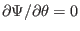
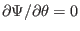

Next: Local safety factor Up: Notes on tokamak equilibrium Previous: Covariant and contravariant representation
A coordinate system
 , where
, where  is the usual
cylindrical toroidal angle, is called a magnetic surface coordinate system if
is the usual
cylindrical toroidal angle, is called a magnetic surface coordinate system if
 is a function of only
is a function of only  , i.e.,
 (we also have
since we are considering
axially symmetrical case). In terms of
, i.e.,
 (we also have
since we are considering
axially symmetrical case). In terms of
 coordinates, the
contravariant form of the magnetic field, Eq. (172), is written as
coordinates, the
contravariant form of the magnetic field, Eq. (172), is written as